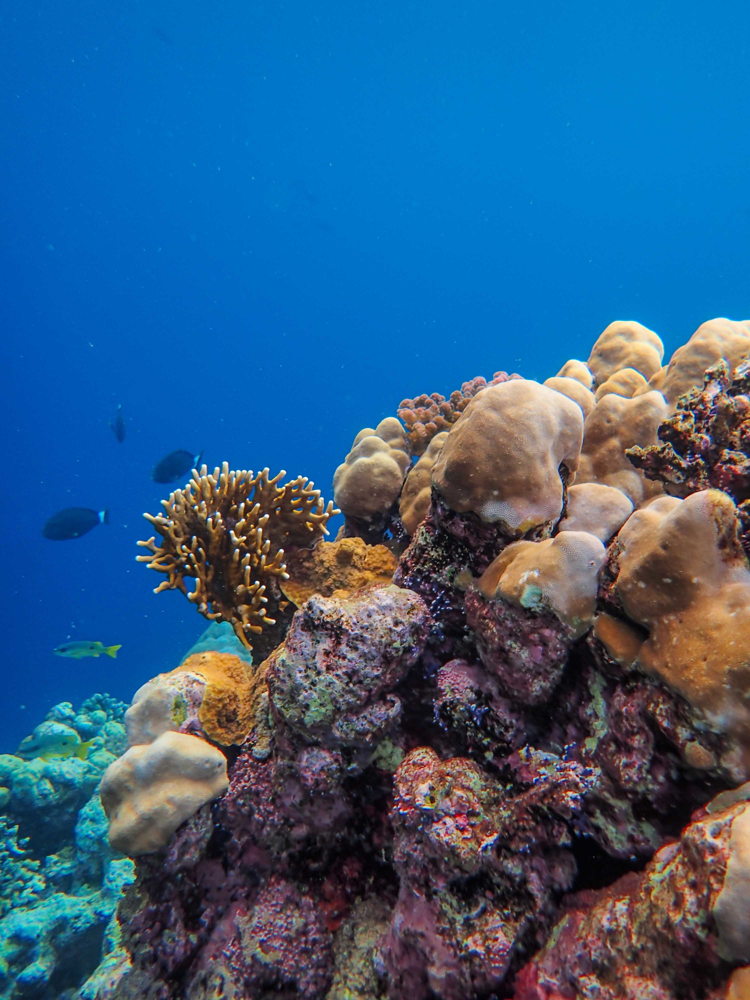
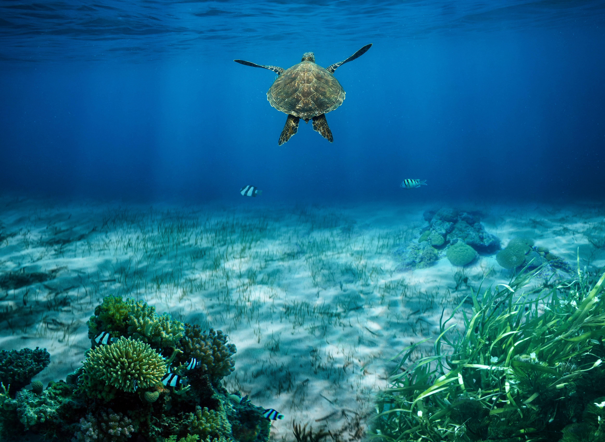

The Vast Blue Biosphere
The global marine ecosystem covers over 70 percent of Earth's surface, representing the planet's largest continuous habitat. From sunlit coastal coral reefs to pitch-black hydrothermal vents deep on the ocean floor, oceans drive global climate systems and generate most of the air we breathe.
Teeming with billions of microscopic phytoplankton and majestic marine megafauna, the seas maintain a delicate chemical balance that sustains all life on Earth.
Oxygen Production & Climate Control
For students studying environmental science, oceans are the primary engine of planetary life. Marine phytoplankton produce over half of Earth's oxygen through photosynthesis, while the ocean as a whole absorbs vast amounts of excess carbon dioxide and heat generated by human activities.
Protecting marine habitats from plastic pollution, overfishing, and ocean acidification is critical to preserving global climate stability.

Key Environmental Metrics
Essential scientific data points defining the marine and ocean biome.
~71%
Of the planet's total surface area
>50%
Generated by marine phytoplankton
3,688 m
Extending down into the abyss